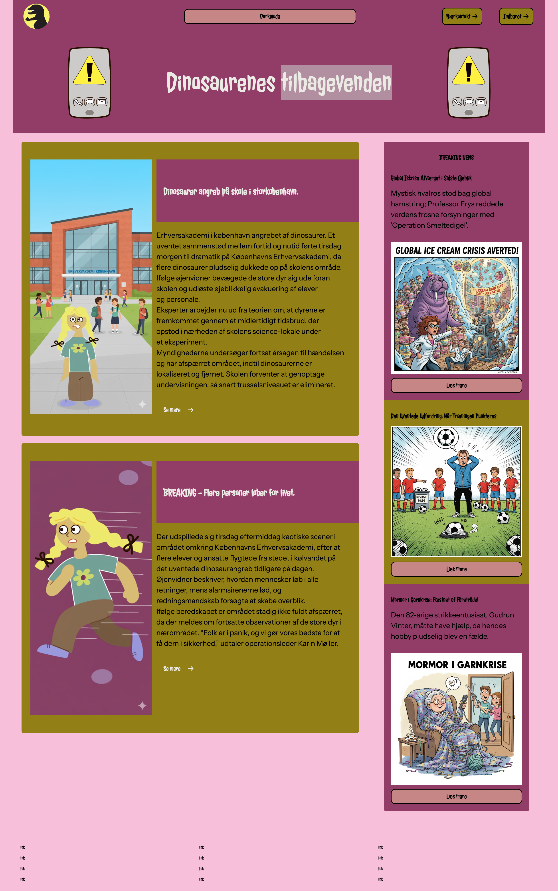
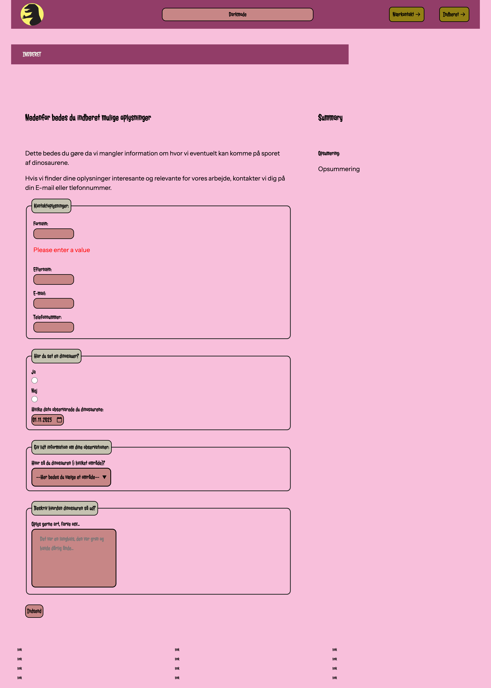

04


På tema 4 skulle alle studerende lave et “Emergency Site" med primært fokus på de komponenter der bruges på et website. Der var hovedsageligt fokus på JavaScript og hvordan vi kunne få det implementeret på vores site.
Vi startede forløbet ud med at lave en hel del øvelser for at få hjernen til at generere ideer. “Crazy 8” og “Peer to peer” var blot to af øvelserne. Paper-prototyping og skitsering var også noget af det som var vigtigt at stifte bekendtskab med i starten.
En masse øvelser og “doodling” senere, fik vi et kursus i Adobe Illustrator (Ai). Målet her var at blive tryg i programmet (værktøjerne) og få produceret noget vektorgrafik i SVG-format som kunne indgå på vores “Emergency Site". Det var udfordrende og spændende at stifte bekendtskab med Ai.
Så skulle vi til at lære programmeringssproget JavaScript og udvide vores kundskaber med CSS. JavaScript kan anvendes til at tilføje mere funktionalitet til ens site. Vi lærte om variabler, metoder, funktioner, events og betingelser og implementerede disse på vores site. Sideløbende blev vi også introduceret til “Consol log”, som bruges til at finde fejl og mangler i ens kode.
Design processen i dette forløb var en del anderledes, da vi fik udleveret “pre-made” styletile. Det var stadig et krav at vi skulle ændre på forskellige parametre og tilføje darkmode ved hjælp af CSS.
HTML Forms var også et af læringsmålene for dette tema. Forms bruges til at indsamle brugerinput/date i form af knapper og felter som brugeren kan udfylde. Vi brugte ovenstående til en “indberet” side hvor brugeren kunne indberette information om nødsituationen/"the emergency”. Her brygte jeg elementer som textarea, email, phonenummer, select/option, radio osv.
Mit eget site kom til at handle om "dinosaurernes tilbagevenden til jorden" og hvordan en dinosaur angriber EK. Hovedpersonen på websitet er en studerende, man skal hjælpe væk fra dinasaurangrebet. Ved hjælp af Adobe illustrator fik jeg både hovedkarakteren samt hjælpemidlerne, man skulle bruge for at slippe væk. Jeg brugte HTML svg grafik til at implementere det på sitet. Sitet kan ses her: